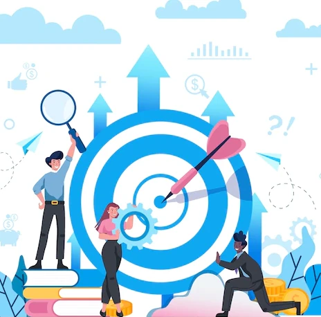
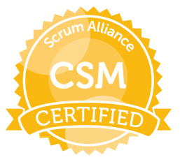

Mejores logros
Principales logros a lo largo de la carrera
Logros academicos y de experiencia en el trabajo.
-

"Certificación en Gerencia de Proyectos del PMI Internacional. "
Por si solo, conseguir la certificación es uno de los logros mas importantes en mi carrera. Me ha permitido estructurar el trabajo en muchos frentes de la tecnologia.
-

"Liderazgo en proyectos estrategicos soportados por la PMO Corporativa."
Se han liderado proyectos de todo tipo, entre los mas destacados estan:
-Cambios en el ERP. Con procesos de validación de software y control de cambios soportados por el ITSM.
-Sistemas de Facturación Electronica de varios paises de latinoamerica.
-Estrategicos del negocio para incrementar el Revenue a traves de soluciones directas a los clientes, como son las estrategias de eLearning.
-Proyecto de lanzamiento de nuevos productos que incluyen productos medicos de ultima generación.
-
"Certificación LEAN/Six Sigma"
Uso de metodologias de mejora continua LEAN/Six Sigma para resolucion de problemas de negocio. Particularmente dos proyectos de mejora en tiempos usando DMAIC y Eventos Kaizen respectivamente.
-

"Certificación CSM Certified Scrum Master"
Se obtuvo el conocimiento para aplicarlo en un gran cantidad de proyectos que requerian ser manejados de manera agil.
-
"Liderazgo en proyectos de desarrollo de aplicaciones moviles"
Se lidero 3 proyectos con metodologia SCRUM para el desarrollo de aplicaciones moviles. El primer proyecto consistio en una solución para clientes directos para la consulta de una tecnologia medica. El segundo era una solucion movil que calcula el estado de una enfermedad particular. Y el tercero una solucion movil para apoyar el trabajo de medicos. Se evaluo arquitectura de software y se alineo con las tecnologias estandar de la compañia.
-
"Liderazgo en proyectos de complejidad mediana a alta."
Se lidero proyectos con las siguientes caracteristicas que lo hacen complejos:
-Cantidad de stakeholders de alrededor de 80 personas.
-Manejo de diferentes zonas geograficas (Mexico, India, Europa).
-Uso de gran cantidad de recursos de apoyo para suplir el one2one en proyectos que es obligatorio hacerlo. -
"Desarrollo de componentes y artefactos para soportar procesos especificos de negocios en plataforma Java."
Se lidero iniciativas de desarrollo para soportar:
-Sistemas de nómina.
-Sistemas de administración de cartera.
-Sistemas de facturación electronica donde la entidad fiscal exige cambios con ventanas de tiempo muy reducida.
Los proyectos se nombran de manera generica para no comprometer el Knowhow de las soluciones desarrolladas. No se puede dar detalle de los mismos ya que constituyen derechos de propiedad intelectual de mis empleadores. Todos estos logros han tenido algo en particular, la aplicacion practica de los conocimientos adquiridos en la academia.